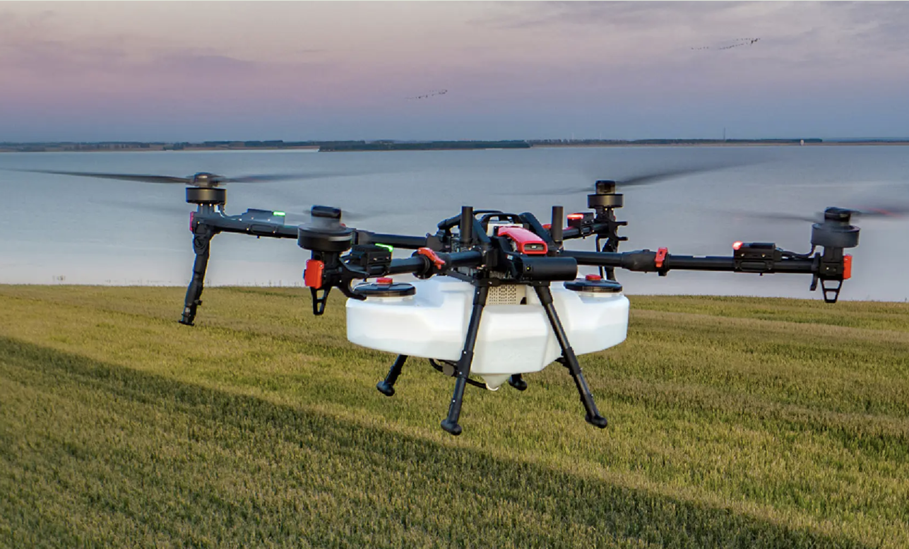
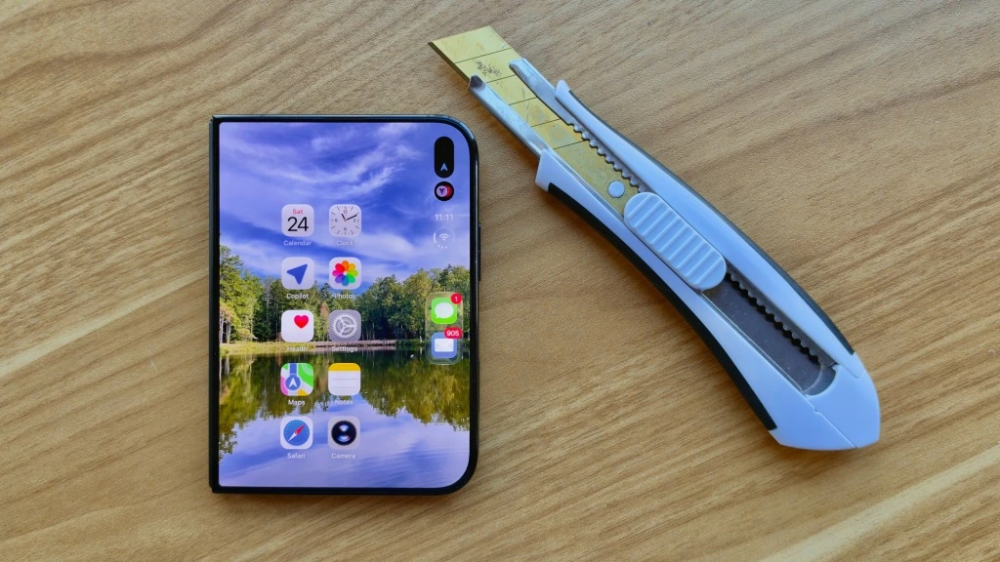

THE TECH EDIT
기술의 변화, 매일 한눈에.
카메라 · 스마트폰 · AI, 해외 테크 소식을 모아 전합니다.
최근 발행2026-10-26
새로 들어온 소식
LATEST STORIES
최신 뉴스
전체 3,898개 기사
미국 통신사 버라이즌, Apple iPhone 듀오 사전 예약 배송 지연에 사과하며, 피해 고객에게 100달러 기프트 카드 증정

소프트뱅크가 투자한 농업용 드론 스타트업 XAG: 모든 농부가 자신만의 로봇을 갖기를 희망한다

시그마, 부분 적층 센서, 6K 동영상 및 콤팩트 바디를 갖춘 FP2 풀프레임 카메라 출시
루웨이빙, Xiaomi 18 폴더블 스마트폰 주름 재언급: 차세대 폴더블 아키텍처 적용, 평균 깊이 30μm 이하

새로운 유출에서 iPhone 듀오의 왼손 사용을 위한 "Reachability" 기능이 공개되었습니다.

소프트웨어 및 디스플레이 문제로 iPhone 듀오, 중국 일부 지역에서 이미 할인 판매 중

Huawei Mate 90 RS/Pro Max 컬렉션 에디션 HarmonyOS 7.0.0.111SP13 업그레이드, Xunying Z10 모듈 카메라 연결 최적화
HMD 신형 유럽판 퓨전 스마트폰 사양 유출: 스냅드래곤 7s Gen 2 칩, 120Hz 주사율로 업그레이드
GEEKCON 2026 상하이 폐막: 해커, '드론 원격 탈취', '링크 하나로 주요 앱 제어' 등 보안 취약점 시연
BBC '블루 플래닛 3', AI '완벽한 이미지'와 선 긋기 위해 의도적으로 결함 있는 장면 보존
반품 사기 방지: Apple, Apple Store 직원이 밀봉된 상자 안의 iPhone 무결성을 스캔할 수 있는 새로운 감지 장치 개발

Apple iPhone 듀오 내구성 테스트: 역방향으로 구부리자 내부 화면 균열 발생

Apple iPhone Duo 분해: 듀얼 배터리 4883mAh, 물리 SIM 카드 슬롯 없음
Apple, iPhone 듀오 지원 문서 공개, 힌지 및 화면 문제 해결 지원
Apple iPhone 듀오 일부 지역에서 가격 하락, 왕텅은 Xiaomi, Huawei 폴더블 스마트폰에 비해 특별히 앞선 점이 없다고 언급
Apple iPhone 듀오, 일부 지역에서 가격 인하: 전자상거래 플랫폼 '100억 위안 보조금'에 포함, 출시가 대비 약 200~300위안 저렴
Apple iPhone Duo, 징둥에서 15,999위안에 구매 가능, 다음 날 배송
구르만: Apple, 왼손잡이 사용자를 위해 스마트폰 사용 습관에 따라 인터페이스를 조정하는 새로운 '간편 접근' 모드 개발 중

StarFlash 3.0 표준 성과 발표: Huawei, China Mobile, Lenovo 등이 공동 구축, 전 장면 스마트 사물 인터넷 지향, AI, 무전원, 밀리미터파 등 방향 목표
Xiaomi 18T/Pro 시리즈 스마트폰, 디멘시티 칩 탑재 및 2억 라이카 이미지 테스트 진행 중

역대급 업데이트: 위챗 원격 업그레이드, 아이폰 듀오 및 기타 기기 동시 로그인 지원
검색 결과가 없습니다
다른 검색어를 입력하거나 필터를 초기화해 보세요.